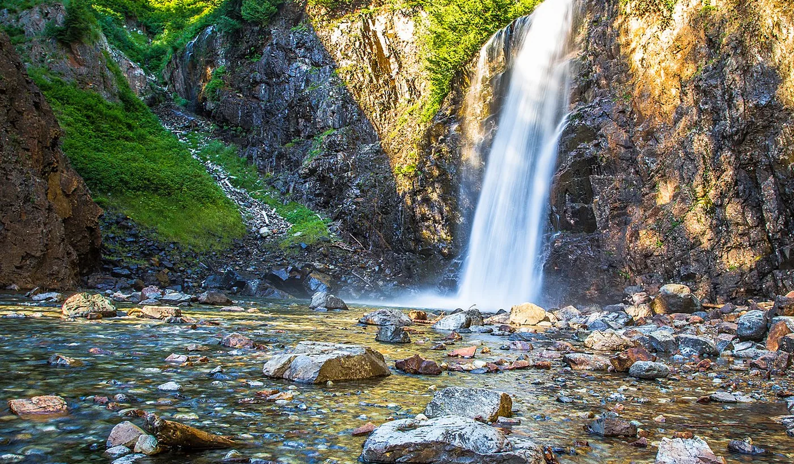
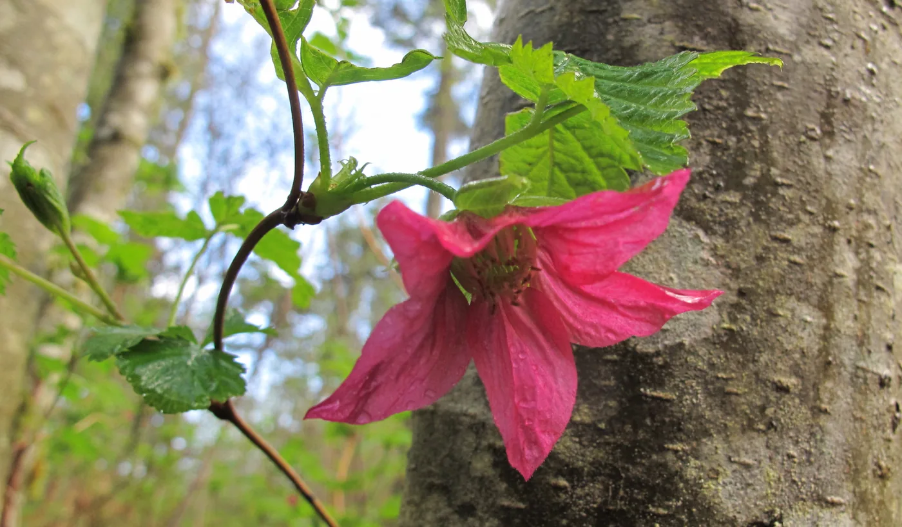

Thursday
Dinner
Chicken quesadillas
Meals first · Activities after
A simple Thursday–Saturday plan built around shared meals, a Friday hike, the CSA farm pickup, and a relaxed visit to Chateau Ste. Michelle.
Start here · At the table
Thursday dinner through Saturday breakfast, with Friday lunch out after the hike.
Thursday
Friday
Saturday
Then get out together
Friday centers on a family hike, lunch out, and a 3:00 p.m. Chateau tasting. Saturday stays intentionally light: CSA pickup if its window fits, packing, and an unhurried airport departure.
Friday morning · Hike
Both cards open their exact AllTrails route. Franklin is the more impressive visitor hike; Paradise Valley gives the three-year-old the best chance of walking the entire route.

Best overall Trail photo · AllTrailsSnoqualmie Pass
A short, shaded river hike ending at a memorable 70-foot waterfall.

Best for little legs Trail photo · AllTrailsParadise Valley · Woodinville
A gentle forest loop with minimal climbing and a pond, inside a proven family favorite.
Friday plan
Budget roughly 90 minutes to Franklin because of Friday’s I-90 work.
Current Franklin forecast for the intended morning window; recheck Thursday.
Water, snacks, sun hats, diaper kit, light spray layer, and first-aid kit.
Franklin requires a concise lunch and timely departure; Paradise Valley leaves much more slack.
Beyond the trail
Friday carries the hike and Chateau. Saturday is reserved for the CSA pickup, packing, and the airport—with no fixed attraction competing with the flight.
CSA stop
Visit the farm and collect the week’s CSA share. The exact farm and published pickup window are not yet confirmed.
Woodinville · Friday afternoon
Target the all-ages Feature Flight Tasting, not the six-person patio option. It lasts 75 minutes, accommodates up to 12, and keeps the seven-person group together.
SEA → DFW · Flight 757
Four travelers depart Seattle and arrive Dallas/Fort Worth at 9:24 p.m. local time.
Load bags before noon and check the live gate and SEA conditions before leaving. Saturday has no Chateau commitment; if the farm timing is uncertain, skip the pickup rather than compress the flight buffer.